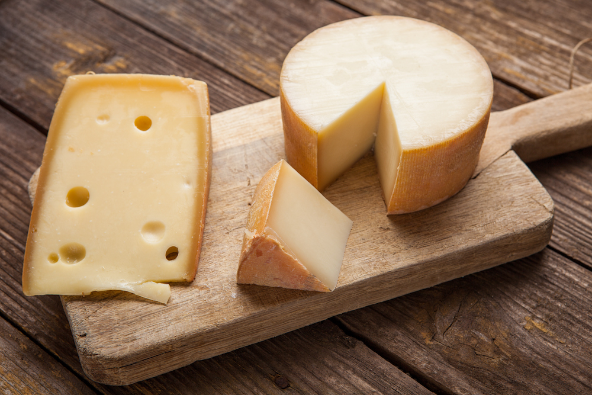

Hard cheeses
Aged for months or years, hard cheeses trade moisture for concentration. Time breaks proteins into crystals of crunch and deep, nutty flavor.
Character: dense, granular, sometimes crystalline. Flavors of browned butter, broth, and toasted nuts that linger long after the bite.
Notable members: Parmigiano-Reggiano, aged Gouda, Comte, Manchego, and Gruyere.
How to enjoy: shave over pasta, break into rough chunks for a board, or grate the rind into soup — the rind of Parmigiano is a soup ingredient, not trash.
Did you know? Those crunchy specks in aged Gouda and Parmigiano are tyrosine and calcium lactate crystals — a sign of long, honest aging, not salt.